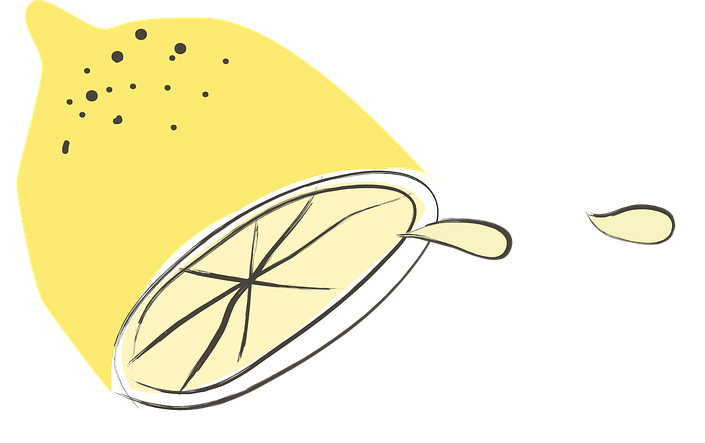
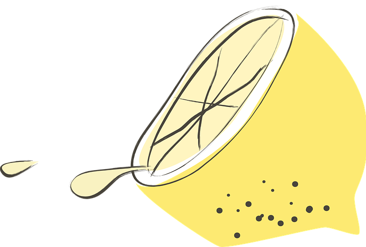

Combava
Notre association

L'association Combava cherche à vous faire vivre la sansation de la meilleure citronnade. Pour cela nous allons chercher nos agrumes chez les meilleurs producteurs, bio et locaux, du sud de la France. Tout en nous inspirant de la recette originale de "David's Lemonade". Ces produits frais, locaux et une réalisation manuelle font d'elle le meilleur moyen de vous faire vivre ou revivre cette sensation. Ainsi nous organisons si de nombreuses dégustations, chez nos magazins et associations partenaires, pour que vous puissiez goûter cette citronnade et vous replongez en enfance.
